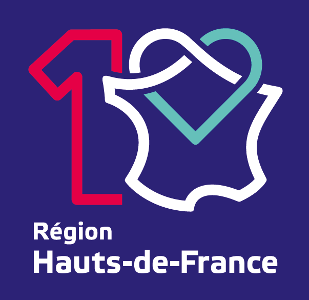
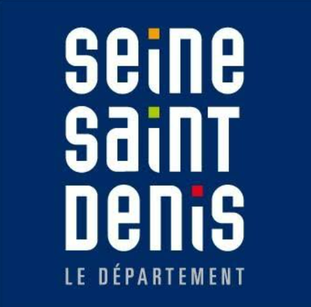
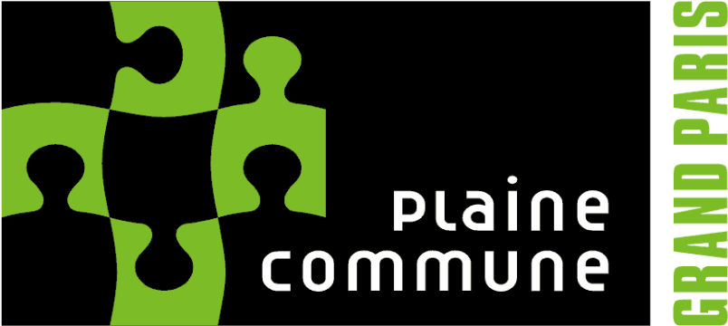

Géomaticien (Bac+5) avec un fort intérêt pour la gestion et l'analyse spatiale et environnementale. Deux ans d'expérience en collectivité territoriale : administration et contrôle qualité d'une base PostGIS, conception de portails cartographiques et d'applications web métier, collecte de données sur le terrain, documentation et accompagnement des utilisateurs. Maîtrise de la suite ESRI (ArcGIS Pro, ArcGIS Online, Experience Builder, Field Maps) comme des solutions open-source (PostGIS, Django/GeoDjango, Leaflet). Développe en Python des chaînes de traitement et des outils de géotraitement à partir de données ouvertes.

- Administration d'une base PostGIS de patrimoine : structuration, contrôle qualité et fiabilisation des données saisies par plusieurs services.
- Conception de portails cartographiques et d'applications web métier pour différents services. ArcGIS Online, Experience Builder, Django, PostGIS, Leaflet
- Levés GPS et détection de réseaux sur le terrain. Documentation, accompagnement des utilisateurs, veille technologique.

- Étude sur l'interculturalité (Biennale interculturelle 93) : enquêtes quantitatives et qualitatives, traitement de données, rédaction de livrables.
- Diagnostics territoriaux de plusieurs communes, avec l'ODDS 93 (Observatoire départemental des données sociales).

- Collecte de données des aires de jeux communaux pour un outil métier destiné aux contrôleurs d'aires de jeux. ArcGIS Field Maps, ArcGIS Pro, ArcGIS Online
Autres expériences : chauffeur livreur de nuit (Ciblex) · vacataire Convivialité (Ville de Massy) · chargé d'étude stagiaire (EPT Plaine Commune)
Destinations atteignables en 3h30 selon 5 modes de transport (données ouvertes GTFS, OSM, IGN), storymap interactif. Python, QGIS, GeoLibre
Base PostGIS, fonctions PL/pgSQL, API REST (pg_featureserv) et portail cartographique. PostgreSQL/PostGIS, Leaflet
Flux ETL : détection des changements de contours IGN/INSEE, rapport HTML automatique. FME, open data
GP Tool ArcGIS Pro : indice d'accessibilité par commune via réseau routier. ArcGIS Pro, ArcPy, Python